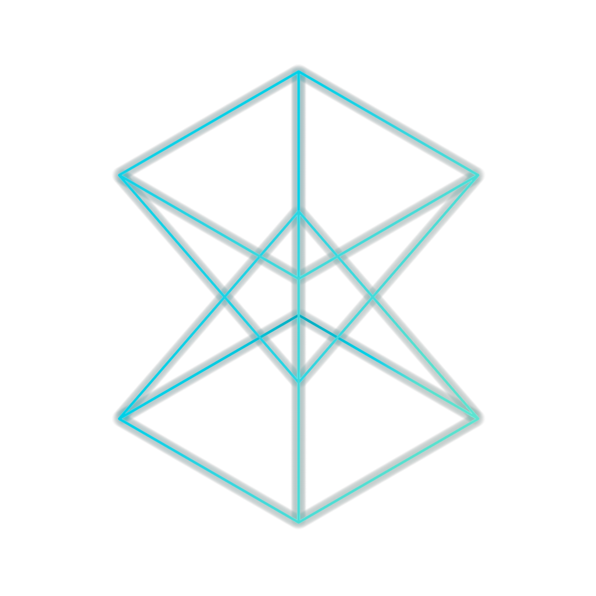

kvartalo project
Cryptocurrency & governance system for neighbourhoods
kvartalo is a set of tools to provide local currency & governance system for neighbourhoods.
 Consists on a ecosystem where each neighbourhood can deploy its own cryptocurrency tied up with a governance system, where for example, people can use their wallet to vote in which social projects of the neighbourhood will be sent the specified % of fees of the transactions.
It's a live project, being developed while it's deployed in a real neighbourhood in Barcelona as a first pilot
It aims to create circular economy in the neighbourhoods, while empowering people and experimenting with the potential of blockchain technology.

How it works?
First experimental iteration
(Explanation under construction)
Economics
- value 1:1 with
eur- tokenized
eurs - with possibility to unlink the value from
eurin the future, but for the moment is a fixed rate
- tokenized
- token creation
- each entity that will participate in the experiment, says which quantity of
eurwill be able to block - each entity 'blocks' / 'frozes' that quantity of
eur, and receives that quantity inkvt. That action is a trusted action, as the entity is a trusted entity by the ecosystem- in this way, all the
kvtquantity of the ecosystem will be backed up witheur
- in this way, all the
- to adquire
kvtpeople can go to one of the entites that participate in the experiment, changing theireurforkvt - a person that have
kvtwill be always able to change them back toeur
- each entity that will participate in the experiment, says which quantity of
- a multisig owned by the different entities manages the suply of
kvt- when a new entity want to go in, will hold the
eurand will receive the same quantity inkvtthat are created (minted) by that multisig
- when a new entity want to go in, will hold the
- no money value is created in any moment. All the
kvtare 'tokenizedeur', in other words, thekvtare representations of realeur- all the inputs and outputs are always equal
Governance
- for each transaction, there is a 1% fee
- each month, the people using their wallet will be able to vote in which social cause will go the fees of that month
- in this first phase, to avoid cheating, only addresses with more than a threshold
kvtamount during X window time, will be able to vote kvtfrom fees will go directly to the address decided in the votation
Usability tradeoffs for the first version
- common addresses limited to maximum of 20
kvt- it's a low amount for the first phase of the experiment
- to avoid acumulation and risks
- shop addresses will be able to hold more
kvt, as they will need to accumulate the transactions of the payments - a proposal could be that the products selled in
kvtwill have some kind of % discount, to incentivize the use ofkvtinstead ofeur
Roadmap
-
March 2019
MVP implementation
- Token smart contract
- Relay server
- Web Wallet
-
April 2019
Pilot iteration over real neighbourhood
Open process to define roadmap and characteristics
-
May 2019
Testing & improvements
-
May 2019
Meetings with the people involved from the neighbourhood
-
June 2019
Second iteration over real neighbourhood
-
July 2019
Continue second iteration over real neighbourhood
Document & evaluate